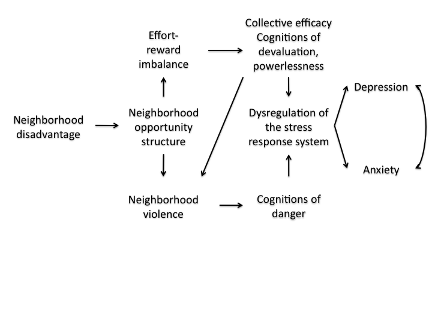
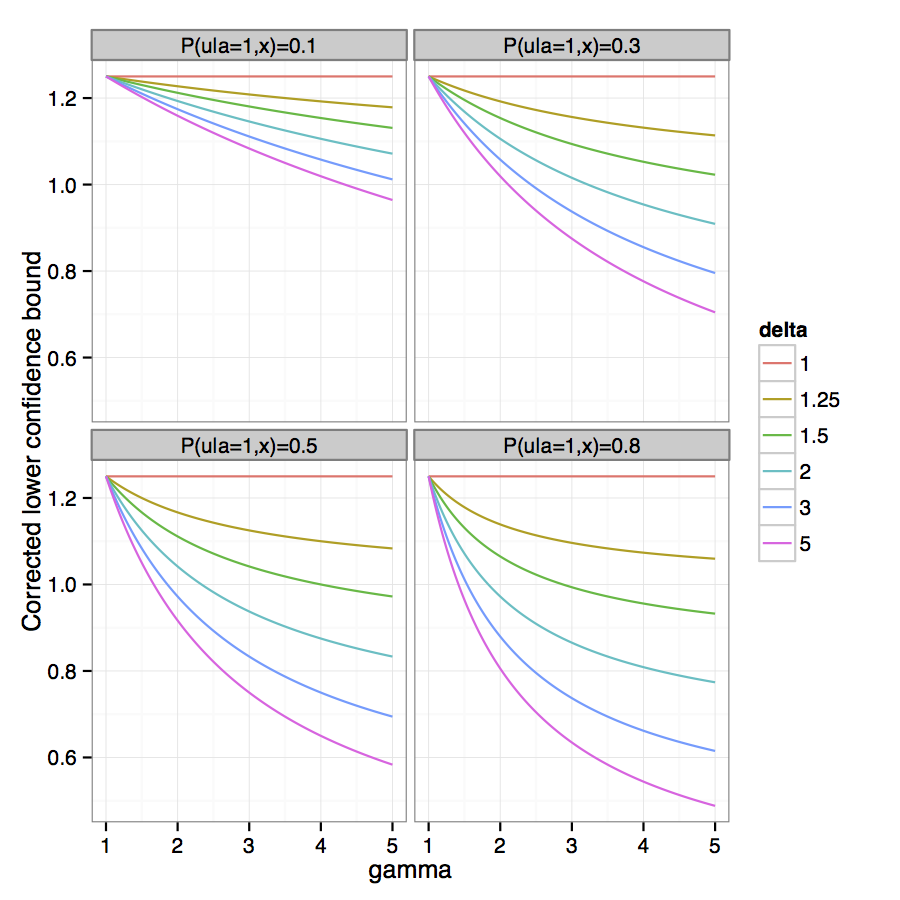
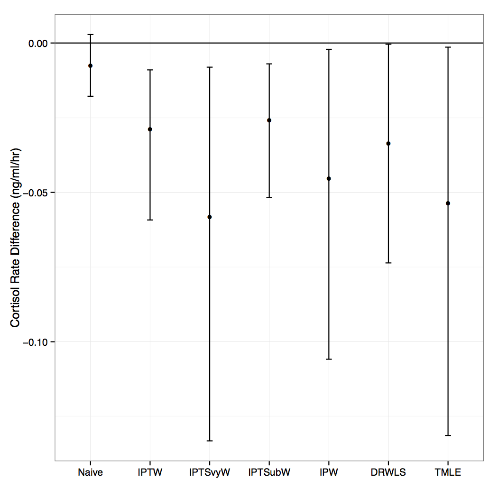

Extra slides
Conceptual Framework
Exposure
What do we mean by neighborhood disadvantage?
- Formulated by Diez-Roux et al (2001) and used in multiple epidemiologic studies.
- Measured at the Census tract level
- Composite measure of 6 Census indicators:
- log median household income
- percent households with interest, dividend, or rental income
- log median value of housing units
- percent persons over age 25 with high school degree
- percent persons over age 25 with college degree
- percent persons in executive, managerial, or professional specialty occupations
Aim 1: Outcome
What do we mean by prevalent emotional disorder?
- Determined by Composite International Diagnostic Interview modified for adolescents
- Corresponds to DSM-IV and ICD-9 diagnoses
In the past 12 months at least one of the following:
Anxiety disorder
- panic
- phobia (specific, social, agoraphobia)
- separation anxiety
- generalized anxiety
- post-traumatic stress disorder)
Major depressive disorder or dysthymia
Aim 1: Effect Modifier
What do we mean by urbanicity?
- Census-derived categories
- large-mid-sized urban center
- urban fringe
- non-urban
Aim 1: Sensitivity Analyses
- Measurement variance \(\rightarrow\) sensitivity analysis using factor scores obtained by multiple-group confirmatory factor analysis.
- Unobserved confounding \(\rightarrow\) bias equations (VanderWeele and Arah, 2011)
- Setting the conditional probability of a given unobserved confounder to 80% in disadvantaged neighborhoods, the unobserved confounder would need to be 2\(\times\) as prevalent in disadvantaged neighborhoods and be associated with 1.4\(\times\) greater odds of prevalent depression/ anxiety to change our inference.

Aim 2: Outcome
What do we mean by cortisol?
- Saliva sample taken immediately before and after face-to-face interview in adolescent's home.
- Measured by radioimmunoassay
- Sensitivity=0.0165 ng/mL
- Intra- and inter-assay coefficients of variation: 5.4%, 26.0%
Aim 2: Sensitivity Analyses
Decision to exclude current smokers and drug users
| Model | Pre | Post | Rate (ng/mL/hr \(×10^{-2}\)) |
|---|---|---|---|
| Current smokers and drug users excluded | |||
| Model 1 | 1.19 (1.05, 1.34) | 0.96 (0.85, 1.07) | -2.47 (-4.13, -0.81) |
| Model 2 | 1.15 (1.00, 1.31) | 0.96 (0.86, 1.07) | -2.38 (-4.14, -0.61) |
| Model 3 | 1.13 (0.99, 1.28) | 0.95 (0.85, 1.06) | -2.20 (-3.87, -0.52) |
| Current smokers excluded, drug users included | |||
| Model 1 | 1.16 (1.01, 1.33) | 0.94 (0.84, 1.07) | -2.30 (-3.89, -0.72) |
| Model 2 | 1.13 (0.97, 1.32) | 0.95 (0.85, 1.06) | -2.21 (-3.95, -0.47) |
| Model 3 | 1.11 (0.95, 1.28) | 0.94 (0.84, 1.05) | -2.03 (-3.68, -0.38) |
| Current smokers and drug users included | |||
| Model 1 | 1.11 (0.96, 1.27) | 0.96 (0.84, 1.10) | -1.77 (-3.36, -0.18) |
| Model 2 | 1.08 (0.92, 1.26) | 0.97 (0.86, 1.10) | -1.62 (-3.34, 0.10) |
| Model 3 | 1.06 (0.92, 1.23) | 0.96 (0.86, 1.08) | -1.44 (-3.14, 0.27) |
Aim 2: Sensitivity Analyses
Unobserved confounding.
- Because exposure is not randomized, the association could be an artifact of unobserved confounding.
- Moderately sensitive. Setting the conditional probability of a given unobserved confounder to be 20% greater in a disadvantaged versus nondisadvantaged neighborhoods, the unobserved confounder would have to bias the conditional mean cortisol slope by 98% to change our inference.

Aim 3: Analysis
Estimand
Population average treatment effect: \(E(Y_1 - Y_0)\)
Identification: \(E(Y_1 - Y_0) = \frac{E[w^{\Delta_{svy}=1}(\mu(1,\mathbf{W})-\mu(0,\mathbf{W})) \vert \Delta_{svy}=1]}{E(w^{\Delta_{svy}=1} \vert \Delta_{svy}=1)}\)
where \(\mu(a, \mathbf{W})\) is the regression function of the outcome on covariates among those in the subsample with treatment \(A=a\)
Aim 3: Analysis
IPW
\[\begin{equation*} \begin{aligned} w^{A=1, \Delta_{svy}=1, \Delta_{sub}=1} &= \frac{I(\Delta_{svy}=1)}{P(\Delta_{svy}=1 \vert \mathbf{W})} \times \frac{I(A=1)}{P(A=1) \vert \Delta_{svy}=1, \mathbf{W})}\\ &\times \frac{I(\Delta_{sub}=1)}{P(\Delta_{sub}=1 \vert A=1, \Delta_{svy}=1, \mathbf{W})} \\ &= \frac{I(A=1, \Delta_{sub}=1, \Delta_{svy}=1)}{P(A=1,\Delta_{sub}=1, \Delta_{svy}=1 \vert \mathbf{W})} \\ w^{A=0, \Delta_{svy}=1, \Delta_{sub}=1} &= \frac{I(\Delta_{svy}=1)}{P(\Delta_{svy}=1 \vert \mathbf{W})} \times \frac{I(A=0)}{P(A=0) \vert \Delta_{svy}=1, \mathbf{W})} \\ & \times \frac{I(\Delta_{svy}=1)}{P(\Delta_{sub}=1 \vert A=0, \Delta_{svy}=1, \mathbf{W})} \\ &= \frac{I(A=0, \Delta_{sub}=1, \Delta_{svy}=1)}{P(A=0,\Delta_{sub}=1, \Delta_{svy}=1 \vert \mathbf{W})} \end{aligned} \end{equation*}\]
Aim 3: Analysis
DRWLS
- Use \(w^{\Delta_{sub}=1, A=a, \Delta_{svy}=1}\) in a WLS regression outcome model. Using G-computation, predict counterfactual outcomes from WLS, standardized to the survey sample.
- Use the counterfactual outcomes to estimate the marginal mean effect in the survey sample.
- Weight this estimate by the survey weights to estimate the marginal mean effect in the population.
Aim 3: Analysis
TMLE
- Obtain predicted values of the outcome conditional on the treatment and covariates.
- Estimate coefficients for the vector of clever covariates \(w^{\Delta_{sub}=1, A=a, \Delta_{svy}=1}\) via regression with \(Y\) as the outcome and using \(\hat{Y}^0\), the initial predicted values of the conditional outcome, as an offset.
- Update \(\hat{Y}^0\) by the estimated coefficient multiplied by the clever covariate. Extract predicted counterfactual outcome values for each individual in the survey sample using G-computation. Weighting the predicted individual treatment effects by the survey weights, compute the marginal mean effect estimate for the population.
Aim 3: Analysis
TMLE
\[\begin{equation*} \begin{aligned} \hat{\psi} &= \frac{\frac{1}{n}\sum\limits^{n}_{i=1}\frac{1}{\pi(W_{1i})} (\mu^1(1, X_i) - \mu^1(0, X_i))}{\frac{1}{n}\sum\limits^{n}_{i=1}\frac{1}{\pi(W_{1i})}}\\ \text{where } \mu^1(A, X_i) &= logit^{-1}\bigg[logit(\hat{mu}^0(A, X_i)) + \hat{\epsilon}\frac{(2A-1)\Delta_{sub}}{\pi(W1)\hat{g}(A,X)} \bigg]\\ \text{and } \frac{1}{\pi(W_1)} &= \frac{1}{P(\Delta_{svy}=1 \vert W_1)}\\ \text{which solves } \hat{D}(O) &= \frac{1}{\pi(W_1)}\bigg[\frac{(2A-1)\Delta_{sub}}{\hat{g}(A,X)}(Y - \hat{\mu}^1(A,X) + \hat{\mu}^1(1,X) - \hat{\mu}^1(0,X) - \hat{\psi}) \bigg] \end{aligned} \end{equation*}\]
Aim 3: Results


Aim 3: Results
- No noticeable penalty for overadjusting.
Sensitivity Analyses
- Truncate weights at 99th percentile
- Simplify from two-stage to one-stage selection process
- Strengthening and weakening the relationship between \(W_1\) and selection
- \(W\) associated with both probability of treatment and probability of selection
- No EH, binary EH
- No change in relative performance under correct model specification